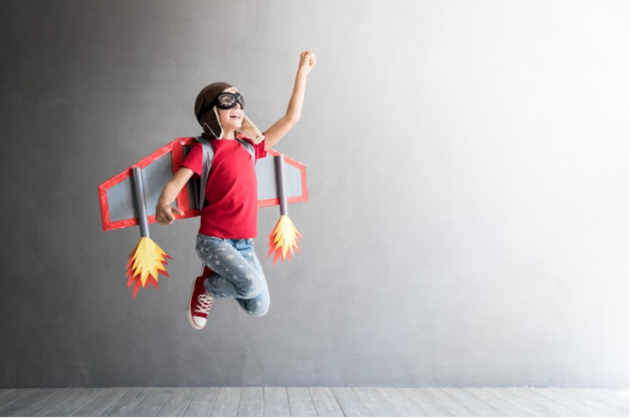

Amplía sus ideas
Desafía su creatividad
Dentro del enfoque STEAM, la combinación de diferentes tipos de proyectos desempeña un papel fundamental en el proceso de aprendizaje interdisciplinario.
La robótica educativa ofrece a los estudiantes la oportunidad de explorar conceptos de tecnología y ingeniería a través de la construcción, programación y operación de robots. Estos proyectos no solo desarrollan habilidades técnicas, sino que también promueven la resolución de problemas y el trabajo en equipo.
Los proyectos de arte y tecnología fusionan la creatividad artística con las herramientas y técnicas digitales para explorar nuevas formas de expresión artística y creativa. Esta combinación permite a los estudiantes experimentar con medios digitales mientras exploran conceptos de diseño, narrativa visual y estética.
Por otro lado, los proyectos de ciencias brindan a los estudiantes la oportunidad de investigar y explorar conceptos científicos a través de experimentos, análisis de datos y presentaciones. Estos proyectos fomentan la curiosidad, la indagación y el pensamiento crítico, permitiendo a los estudiantes desarrollar habilidades fundamentales para el éxito en el ámbito científico y más allá.
Proyectos de ciencia
Proyectos de Arte y Tecnología
Sumérgete en el mundo del arte y la ciencia con nuestra emocionante actividad de pintura con mármol.
Los niños pueden crear hermosos patrones y diseños abstractos utilizando una bandeja poco profunda, pintura acrílica y canicas. Al dejar caer las canicas en la bandeja con pintura y hacerlas rodar, podrán experimentar cómo el movimiento y la fuerza crean patrones fascinantes en sus obras de arte.
Deja volar tu imaginación con nuestra actividad de creación de mandalas con arena kinética.
Los niños pueden explorar patrones y simetría mientras crean hermosos diseños con arena cinética en una bandeja poco profunda. Usando herramientas simples, como palillos o pinceles, podrán dibujar y esculpir patrones intrincados en la arena, experimentando con diferentes formas y texturas.
Despierta tu creatividad con nuestra actividad de construcción de esculturas de papel 3D.
Los niños pueden explorar el mundo de la geometría y el diseño mientras crean impresionantes esculturas tridimensionales utilizando papel y cinta adhesiva. Experimentando con pliegues, cortes y formas, podrán construir estructuras complejas y originales, explorando conceptos de volumen, equilibrio y estabilidad.
Embárcate en una aventura teatral con nuestra actividad de creación de sombras chinescas.
Utilizando una fuente de luz detrás de una pantalla blanca, podrán experimentar cómo las sombras de sus figuras cobran vida, contando historias y creando mundos imaginarios.
Proyectos de Robótica Educativa
Prepárate para la batalla con nuestro emocionante proyecto de Mini Sumo Bot. Los niños pueden construir pequeños robots autónomos utilizando materiales simples como motores de vibración, pilas de botón y piezas de LEGO.
Después de construir y programar sus robots para detectar y empujar a sus oponentes fuera de un área designada, podrán competir en emocionantes torneos de mini sumo.
Atrévete a resolver el desafío de nuestro laberinto robótico. Los niños pueden construir laberintos utilizando materiales simples como cartón, cinta adhesiva y tubos de papel, y luego programar robots para navegar a través de ellos.
Experimentando con sensores de ultrasonido o infrarrojos, podrán diseñar algoritmos para detectar paredes y encontrar el camino hacia la salida del laberinto.
Aventúrate en terreno desconocido con nuestro proyecto de vehículo todo terreno. Los niños pueden construir vehículos robóticos utilizando motores, ruedas y chasis de LEGO o materiales reciclados.
Después de ensamblar y conectar los componentes, podrán programar sus vehículos para superar obstáculos y terrenos difíciles, como rampas, charcos de agua y superficies resbaladizas
Aprende sobre conceptos de clasificación con nuestro Juego de Clasificación de Bloques.
Los niños pueden construir un sencillo robot con contenedores de plástico y ruedas de juguete, y luego programarlo para recoger y clasificar bloques de colores en diferentes contenedores según su color.